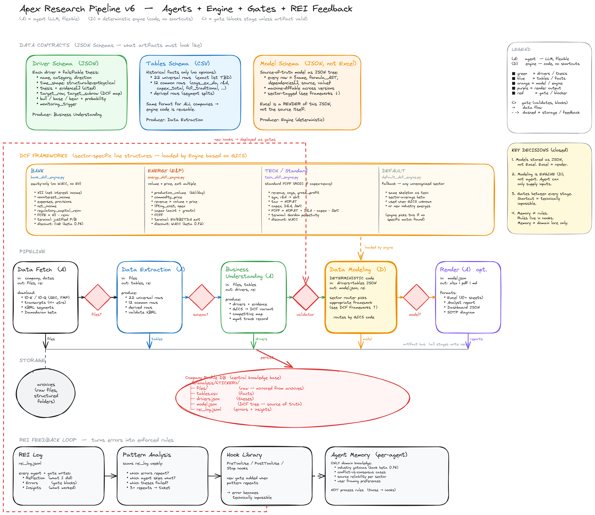

Six months ago, my co-author wrote this on LinkedIn.
"How is adopting AI in investments — like driverless cars?"
— Andrew Ang
Chief Strategist, Altbridge
Former Head of Systematic Investing, BlackRock
Columbia Business School · 34,000+ academic citations
September 2025 · SSRN 5468687
The L0–L5 Framework — six levels of autonomous investing
Level
Name
Behavior
Human Role
L0
No Automation
All analysis manual. AI tools only support.
Full control
L1
Investor Assistance
Single-task automation. Data collection. Alerts.
Human-in-the-loop
L2
Partial Automation
Integrated analysis. Sentiment + valuation. AI synthesizes.
Human supervises
L3
Conditional Automation
AI recommends buy/sell within defined domain.
Human-on-the-loop
L4
High Automation
Full autonomy within defined operational domain.
Human-out-of-the-loop
L5
Full Autonomy
Across all market conditions. Theoretical.
Policy-only
L3 is where the institutional industry can credibly be today.
Where the industry is today
L0 – L2
Most of the industry
AI as marketing. ChatGPT wrappers. Factor-model black boxes. "AI-powered" rebranding.
L3 – L4
Achievable now
Rare. Requires architectural discipline. Altbridge operates at L4.
L5
Theoretical
Full autonomy — no human in the loop. Systemic risk questions. Decades away.
Let me tell you our own journey through these levels.
Phase 1 · 2025
Our first live deployment
What we ran
A Level 3 system. US/China equities, value approach. Conviction scoring, DCF modeling, sector-routed frameworks.
PM approval through Q3. Transitioned to L4 monitoring after.
Why it mattered
The L3 → L4 transition isn't theory from our paper — it's what we lived through in real time.
The first proof point that the framework describes something real.
Phase 1 results · 2025 full year
Apex value strategy performance
+33%
2025 gross return
2.28
Sharpe ratio
−5%
Max drawdown
+12.6pp
vs S&P 500 TR
$490K → $650K
Capital grown
Live capital. Audited brokerage account. No leverage. A small team, in Almaty, using AI as augmentation — not a black box.
Phase 2 · September 2025
Intellectual reset with Andrew Ang
Our team — Nazym, Andrey, Zhassulan — and Andrew Ang published the L0–L5 framework you just saw.
"The most binding constraint in institutional asset management is not data availability or model sophistication, but the finite bandwidth of human decision-makers."
— Ang et al., 2025
That reframed everything. We needed to redesign our system so humans could supervise more, more efficiently, with stronger governance. Not less human involvement. Better human involvement.
Phase 3 · April 2026
The Self-Driving Portfolio
Architecture for institutional asset management built on ~50 specialized AI agents. Each has a defined role. They debate. They critique each other. They vote. A meta-agent rewrites their own code.
All governed by the Investment Policy Statement — the same document that constrains a human PM.
In our framework, this is a Level 3–4 system.
ANG, AZIMBAYEV, KIM · ARXIV 2604.02279 · APRIL 2026
Phase 3 validation · Backtest 1996–2026
30-year academic validation
Sharpe Ratio
0.39
Self-Driving Portfolio
vs 0.41 for 60/40 portfolio
Maximum Drawdown
-25.6%
Self-Driving Portfolio
vs -34.3% for 60/40 portfolio
Materially better downside. Across multiple crises — dot-com, GFC, COVID.
Apex Research Pipeline · v6
The architecture

Architecture · Part 1 of 3
Three component types. Just three.
A
Agents
LLMs. Flexible. Read 10-K filings. Interpret transcripts. Build business profiles.
Good at understanding.
D
Engines
Pure code. Deterministic. No language model. No shortcut. Same input → same output.
Good at calculation.
◇
Gates
Schema validators between stages. If an artifact does not pass, the next stage cannot start.
Good at enforcement.
Every component does what it is structurally good at — and nothing more. The operational design domain is defined in code, not policy.
Extraction 22 universal rows · 12 common · derived
STAGE 3 · A
Business Understanding Drivers · citations · target rows
STAGE 4 · D
Modeling GICS router · Bank/Energy/Tech engines
STAGE 5 · A
Render Excel · PDF · dashboard
Key: The model is stored as JSON, not Excel. Excel is a render. Every row has a formula, dependencies, and source pointer. Every cell is auditable. Every value reproducible.
Architecture · Part 3 of 3
REI Feedback Loop
Every agent and gate writes to rei_log.jsonl.
Reflection. Errors. Insights.
1
Weekly pattern analysis scans the log.
2
Same error 3+ times → ticket created.
3The fix is a new gate. The mistake becomes technically impossible.
Apex gets smarter without us.
One real case · From our September paper
Sovereign Wealth Fund Manager Oversight
The challenge: managing relationships with 75 external managers. Quarterly reviews too slow. Insufficient early warning. Manual data compilation delayed decisions.
The implementation: an L3 monitoring system. Daily ingestion of performance, holdings, risk metrics across all 75 managers. Anomaly detection. Unified dashboard.
The result
47
DAYS BEFORE OFFICIAL DISCLOSURE
The system flagged a litigation threat affecting one external manager —
forty-seven days before the official disclosure.
Exposure reduced. Losses avoided. Other investors learned through traditional channels.
This is L3 in action. Not the AI replacing the investment committee —
the AI giving the committee 47 days of additional reaction time.
Implication 1
Audit-grade AI becomes the baseline.
Within five years, no serious institutional allocator will accept "the model decided" as an answer.
They will demand the same standards we apply to human analysts — documented methodology, reproducible decisions, explainable failures.
The funds that built for transparency now will be ahead.
The funds that bolted AI onto opaque processes will face an expensive retrofit.
Implication 2
Regulators in this region can lead.
Most global AI-in-investing frameworks — from the SEC, from European authorities — are reactive. Written after market events.
Kazakhstan — through AIFC and the National Bank — has the chance to be proactive. To define what auditable AI in asset management looks like before there is a crisis.
Not a competitive advantage from looser rules — from clearer ones.
Implication 3
Central Asia builds its own infrastructure.
For decades, the most sophisticated research infrastructure lived in three places: New York. London. Hong Kong.
AI changes this. The same systematic research that took a hundred people in 2015 — now runs with ten.
We are not building software for Wall Street.
We are building institutional asset management infrastructure for our region.
In closing
Three sentences.
ONE
AI in investing today is mostly L1. There is a credible path to L3 — and our team has been walking it for two years.
TWO
The journey produced three things — a live track record, a framework co-published with BlackRock's most senior alumnus, and an architecture rolling into production.
THREE
The next step is regional. Built from Almaty. With this room.
From Level 2 — through Level 3 — toward Level 4.
Built from Almaty. With Andrew Ang. For institutional capital that demands more than "trust the box."